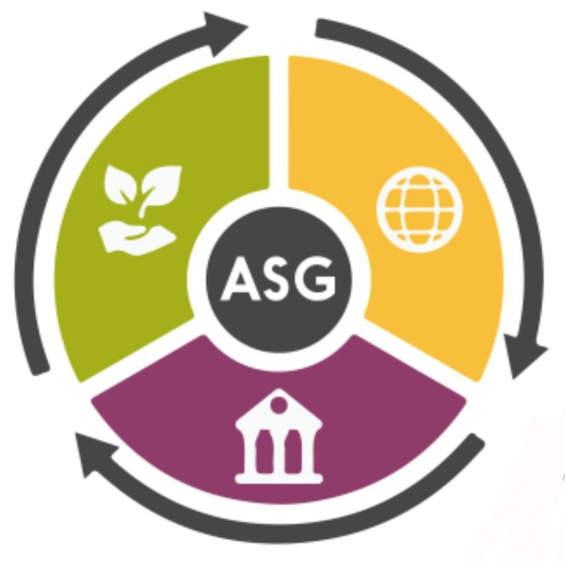
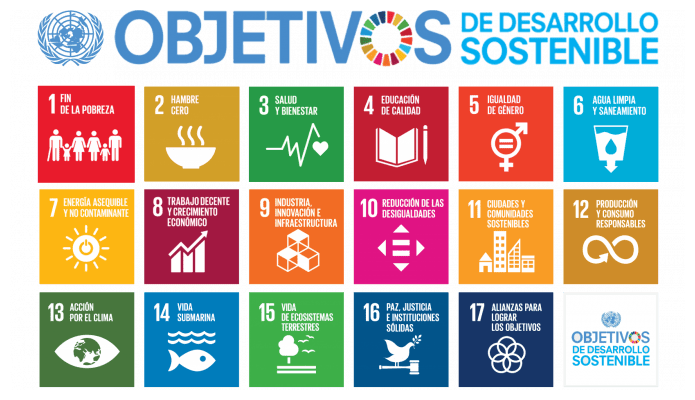

ASG

Resultados de aprendizaje y criterios de evaluacion que se evaluarán en esta unidad.
| Resultados de aprendizaje de la unidad didáctica: |
|---|
| RA. 1: Identifica los aspectos ambientales, sociales y de gobernanza (ASG) relativos a la sostenibilidad teniendo en cuenta el concepto de desarrollo sostenible y los marcos internacionales que contribuyen a su consecución. |
| Criterios de evaluación de la unidad didáctica: |
|---|
| a) Se ha descrito el concepto de sostenibilidad, estableciendo los marcos internacionales asociados al desarrollo sostenible. |
| b) Se han identificado los asuntos ambientales, sociales y de gobernanza que influyen en el desarrollo sostenible de las organizaciones empresariales. |
| c) Se han relacionado los Objetivos de Desarrollo Sostenible (ODS) con su importancia para la consecución de la Agenda 2030. |
| d) Se ha analizado la importancia de identificar los aspectos ASG más relevantes para los grupos de interés de las organizaciones relacionándolos con los riesgos y oportunidades que suponen para la propia organización. |
| e) Se han identificado los principales estándares de métricas para la evaluación del desempeño en sostenibilidad y su papel en la rendición de cuentas que marca la legislación vigente y las futuras regulaciones en desarrollo. |
| f) Se ha descrito la inversión socialmente responsable y el papel de los analistas, inversores, agencias e índices de sostenibilidad en elfomento de la sostenibilidad. |
1 - Desarrollo Sostenible

1. 1 Concepto de desarrollo sostenible
- El concepto de desarrollo sostenible tiene sus raíces institucionales en el Informe Brundtland (1987), donde se formuló como "aquel que satisface las necesidades del presente sin comprometer la capacidad de las futuras generaciones para satisfacer sus propias necesidades".
- Las tres dimensiones integradas: Requiere mantener un equilibrio simultáneo entre tres pilares: crecimiento económico, inclusión social y protección del medio ambiente. Si alguno de estos tres pilares falla, el desarrollo no puede sostenerse en el tiempo.
- Condiciones e impacto: Un desarrollo sostenible garantiza que todas las personas tengan acceso a trabajo digno, atención sanitaria y educación de calidad, al tiempo que las decisiones de políticas públicas aseguran que nadie quede atrás por discriminación y que el uso de los recursos naturales evite la contaminación.
- Contraste con el desarrollo insostenible: El desarrollo insostenible surge cuando se buscan beneficios o gratificaciones inmediatas a corto plazo sin considerar los daños a largo plazo, originando problemas como el cambio climático, la pobreza, el hambre y la inestabilidad social.
1.2 Marcos e Instrumentos Internacionales
- Agenda 2030 para el Desarrollo Sostenible: En 2015, los Estados miembros de la ONU establecieron este plan global para guiar la transición hacia un mundo sostenible.
- Los 17 Objetivos de Desarrollo Sostenible (ODS): Constituyen el núcleo de la Agenda 2030, con metas ambiciosas que abarcan las dimensiones económica, social y ambiental.
- La Cumbre de los ODS de las Naciones Unidas: Se estableció como un encuentro decisivo entre líderes mundiales (como la Cumbre de septiembre de 2023) para renovar compromisos, evaluar los avances y lagunas existentes, y ofrecer orientación política para acelerar las acciones.
- Seguimiento e informes globales: Instrumentos como el Informe de los ODS de la ONU (2023) y las evaluaciones del Grupo Intergubernamental de Expertos sobre el Cambio Climático (IPCC) monitorean los retrocesos y desafíos críticos, tales como los niveles de pobreza extrema o el riesgo de superar el umbral de 1,5 °C para 2035.
- Implementación multinivel: Los gobiernos están incorporando estos objetivos internacionales dentro de sus planes nacionales, proceso que requiere financiamiento público y privado, así como el compromiso activo de la sociedad civil y las decisiones individuales
2 - Sostenibilidad Ecosocial
- Desde una perspectiva ecosocial, el concepto de sostenibilidad se redefine críticamente como la "capacidad de atender con justicia las necesidades del presente sin poner en riesgo las del futuro", asegurando que las personas puedan desarrollar vidas dignas mientras el planeta y todos sus seres vivos mantienen su equilibrio biofísico.
- Este enfoque advierte sobre la contradicción interna del "desarrollismo" capitalista, señalando que un crecimiento económico sostenido e ilimitado (como el propuesto en el ODS 8) resulta materialmente inviable dentro de una biosfera con límites físicos, energéticos y de recursos finitos.
3 - Aspectos ASG (Ambientales, Sociales y de Gobernanza) de la Sostenibilidad
La búsqueda de una sostenibilidad real exige abordar de forma simultánea e integrada las tres dimensiones del enfoque ASG:
3.1 Aspectos Ambientales (A)
Analizan el impacto que las actividades socioeconómicas ejercen sobre la estabilidad y conservación del medio natural. Se estructuran en torno a:
- Respeto a los Límites Planetarios: Adecuar los sistemas productivos para no sobrepasar los parámetros que garantizan que el planeta siga siendo seguro para la vida humana. Esto requiere actuar sobre los límites que ya han sido superados: el cambio climático, la pérdida de biodiversidad, el cambio de uso del suelo, los ciclos alterados del nitrógeno y del fósforo, la acidificación de océanos y el uso de agua dulce, además de regular la incorporación de nuevas entidades (químicos, plásticos, etc.).
- Vivir del "Sol Actual": Detener la extracción y quema desmesurada de los combustibles fósiles del subsuelo (carbón, petróleo y gas) y de energía nuclear, los cuales alteran la atmósfera y generan residuos peligrosos para miles de generaciones. Implica realizar una reducción drástica del consumo energético general y transitar hacia fuentes renovables descentralizadas y de bajo impacto (energías R3E).
- Cierre de Ciclos de Materiales: Abandonar el metabolismo económico lineal de "usar y tirar" y adaptarlo a la economía circular. Esto requiere erradicar la obsolescencia programada, penalizar el consumo superfluo e imitar a los ecosistemas, donde los residuos de un proceso se convierten en los recursos de otro.
- Uso de Recursos en Equilibrio: Ajustar el consumo material de la actividad productiva para que no supere la capacidad de regeneración o reposición del ecosistema del cual se extrae.
3.2 Aspectos Sociales (S)
Evalúan la relación de la actividad productiva con el bienestar de los trabajadores, la clientela y las comunidades. No hay sostenibilidad ecológica viable si no viene acompañada de justicia social. Los criterios clave son:
- Trabajos que Sostienen la Vida: Garantizar condiciones laborales dignas, seguras y con salarios suficientes que permitan una adecuada conciliación de la vida personal y laboral. Implica valorizar y facilitar el reparto equitativo de los trabajos de cuidados imprescindibles para sostener cotidianamente la salud y el bienestar.
- Construcción de Equidad: Combatir la desigualdad material y social fomentando la predistribución y redistribución de la riqueza, limitando la acumulación opulenta e inmoral por parte de una minoría y garantizando los recursos y derechos básicos de subsistencia para toda la humanidad.
- Inclusión e Interseccionalidad: Erradicar activamente las barreras que provocan discriminación interseccional en las organizaciones (por motivos de género, clase social, procedencia, racialización, cultura o capacidades).
- Soberanía y Relocalización: Incentivar el desarrollo de una economía social, solidaria, feminista y ecológica estrechamente vinculada al territorio, promoviendo los mercados de proximidad (circuitos cortos) y la soberanía alimentaria para reducir la fragilidad frente a las cadenas de suministro globales.
3.3 Aspectos de Gobernanza (G)
Se centran en la transparencia, la estructura organizativa, la participación democrática en la toma de decisiones y el cumplimiento normativo y ético de las organizaciones. Incluyen:
- Gestión Democrática y Horizontal: Reemplazar los modelos de organización jerárquicos por esquemas participativos donde la toma de decisiones sea colectiva y la capacidad de influencia esté repartida equitativamente.
- Equidad Salarial Interna: Fomentar diferencias salariales mínimas o inexistentes entre los salarios más altos y los más bajos de la organización, reconociendo que todos los trabajos cooperan de forma valiosa en los objetivos comunes.
- Responsabilidad Social Compartida: Tomar decisiones estratégicas considerando su impacto sobre la población general y sobre otras comunidades, garantizando que el cumplimiento de los fines propios no suponga un perjuicio para entidades terceras.
- Resolución Noviolenta de Conflictos: Establecer mecanismos internos que permitan anticipar, gestionar y regular de forma noviolenta y constructiva los desacuerdos.
4 - Marcos Internacionales para la Consecución de la Sostenibilidad
Los esfuerzos internacionales para estructurar un modelo de desarrollo viable han configurado diversos marcos políticos, científicos y legislativos:
- El Informe Meadows (Club de Roma, 1972): Elaborado por Donella Meadows en el MIT bajo el título "Los límites del crecimiento", fue el primer aviso científico internacional de que un crecimiento ilimitado en un planeta de recursos finitos es físicamente imposible, urgiendo a reconducir la economía global.
- La Agenda 2030 y los Objetivos de Desarrollo Sostenible (ODS) (ONU, 2015): Acuerdo universal suscrito por 193 países que define 17 ODS y 169 metas articulando las esferas social, ambiental y económica. No obstante, presenta serias carencias según el análisis ecosocial:
- Voluntariedad: Funciona como un instrumento de soft law, lo que significa que carece de fuerza vinculante, capacidad de fiscalización externa o sanciones ante su incumplimiento.
- Falta de ambición estructural: Sus metas e indicadores suelen tratar manifestaciones tardías de las crisis ("final de tubería") en vez de las causas de raíz. Además, promueve una contradicción falaz al instar al "crecimiento sostenido" (ODS 8) en un entorno biofísico limitado.
- El Protocolo de Kioto (1997) y el Acuerdo de París (2015): Marcos adoptados en las Conferencias de las Partes (COP) de la ONU. Destaca el Acuerdo de París por ser jurídicamente vinculante y comprometer a los estados a limitar el calentamiento global de la atmósfera por debajo de los 2 °C (preferiblemente a 1,5 °C) respecto a la época preindustrial.
- El Convenio sobre la Diversidad Biológica de las Naciones Unidas (1993): Tratado internacional casi universal dedicado a la conservación de la biodiversidad global, el uso sostenible de sus componentes y el reparto equitativo de los beneficios derivados de los recursos biológicos.
-
El Pacto Verde Europeo (2019) y su Marco Normativo:
- Pacto Verde: Estrategia de la Comisión Europea para reorientar los flujos financieros y conseguir que Europa sea el primer continente climáticamente neutro en 2050.
- Reglamento de Taxonomía Europea (2020): Herramienta legislativa para clasificar qué actividades económicas contribuyen sustancialmente a los objetivos ambientales sin causar un perjuicio significativo al resto.
- Directiva sobre la Información de Sostenibilidad de las Empresas (CSRD - Directiva UE 2022/2464): Exige obligatoriamente a las grandes empresas presentar informes auditados y transparentes sobre su desempeño e impactos ASG, aplicando el principio de doble materialidad.
- Directiva sobre Diligencia Debida de las Empresas (CSDDD - Directiva UE 2024/1760): Exige que las grandes compañías identifiquen, prevengan, mitiguen y reparen activamente los efectos nocivos de su actividad y su cadena de valor sobre los derechos humanos y el medio ambiente.
5 - ASG dentro del sector de las TIC
5.1 Introducción
- Los criterios ASG han pasado de ser una tendencia a convertirse en un elemento clave en la estrategia de las empresas.
- Cada vez más inversores, administraciones públicas, clientes, empleados y grupos de interés exigen a las organizaciones un mayor compromiso con la sostenibilidad, la responsabilidad social y la transparencia.
- Tenerlas en cuenta puede impulsar la competitividad, reforzar la reputación corporativa y contribuir a una mejor gestión.
- En el sector de las Tecnologías de la Información y la Comunicación (TIC), la aplicación de la sostenibilidad ecosocial y los criterios ASG resulta de vital importancia. A menudo existe el "espejismo" de que la digitalización es intrínsecamente "verde" o inmaterial por basarse en la "nube". Sin embargo, la realidad biofísica nos muestra que el sector TIC descansa sobre una infraestructura física masiva con profundos impactos ambientales, sociales y de gobernanza.
5.2 Dimensión Ambiental (A) en el Sector TIC
El impacto ambiental de las TIC es físico, creciente y sumamente centralizado:
-
La huella de carbono digital: Aunque no se vea, internet ya genera aproximadamente el 3,7% de las emisiones globales de CO2, con un incremento del 4% anual en su intensidad energética. Los centros de datos consumen el 45% de esta energía y las redes de comunicación el 24%. El auge de la Inteligencia Artificial (IA), el internet de las cosas y el minado de criptomonedas multiplican exponencialmente esta demanda.
-
La mochila ecológica: Los dispositivos que utilizamos diariamente son verdaderos icebergs de materiales. Un teléfono móvil de solo 150 gramos arrastra una mochila ecológica de 80 kg (es decir, el 99,8% de los materiales movilizados para su extracción, fabricación y transporte se desechan antes de que llegue a tus manos). Un ordenador promedio carga una mochila invisible de 1.500 kg.
-
Extractivismo de minerales críticos: La alta tecnología de las TIC requiere la extracción de más de 50 metales diferentes por dispositivo (como coltán, litio, cobalto, cobre y níquel). Estos minerales son finitos y muchos ya están cerca de sus picos de extracción. Su minería, a menudo a cielo abierto, destruye ecosistemas locales.
-
Residuos electrónicos (E-waste): Estrategias de marketing y la obsolescencia tecnológica programada provocan el descarte de más de 5.300 millones de teléfonos inteligentes al año en todo el mundo. Muchos de estos residuos, altamente contaminantes y de difícil degradación, acaban siendo exportados ilegalmente a vertederos del Sur Global, como el basurero de Agbogbloshie en Ghana.
5.3 Dimensión Social (S) en el Sector TIC
La cara social de la digitalización globalizada revela asimetrías de poder y precarización laboral:
-
Conflictos de neocolonialidad: La obtención de los componentes baratos de hardware perpetúa dinámicas coloniales en los países de origen. Un ejemplo paradigmático es la enorme violencia y el uso de trabajo infantil en las minas de coltán de la República Democrática del Congo para abastecer la producción de móviles y ordenadores occidentales.
-
Precarización y "plataformas colaborativas": En el ámbito del empleo, las TIC facilitan la aparición de plataformas de servicios que acceden a una fuerza de trabajo sindicalmente débil y fácil de explotar. Además, la conectividad constante dilata la jornada de trabajo hacia el espacio privado de las personas.
-
Colonización del tiempo y la atención: El diseño de las aplicaciones de internet está orientado a la captación de datos y la dependencia de las pantallas, colonizando espacios de la vida íntima que previamente no estaban mercantilizados (relaciones, ocio, descanso).
5.4 Dimensión de Gobernanza (G) en el Sector TIC
La gobernanza en el sector se enfrenta al surgimiento de monopolios y la pérdida de soberanía tecnológica:
-
Monopolios radicales: El uso de móviles y pantallas se ha convertido en una obligación social de la que es casi imposible escapar sin arriesgarse a la dessocialización. Al mismo tiempo, el tráfico global de internet está monopolizado por un puñado de corporaciones (como Google, Meta, Apple, Amazon, Microsoft y Netflix), que controlan el 57% del tráfico mundial.
-
Control de la infraestructura física: Estas grandes corporaciones ya no solo controlan el software, sino que son propietarias directas de las autopistas físicas de la información, como los cables submarinos de larga distancia por los que discurre el 95% del tráfico intercontinental. Esto les otorga la capacidad de decidir qué datos viajan, hacia dónde y a qué velocidad.
-
Extracción de datos y vigilancia: El modelo de negocio se basa en la extracción masiva de datos individuales y financieros, lo que devalúa el derecho a la privacidad y facilita sistemas de control tanto corporativos como estatales.
5.5 Falsas soluciones comunes en TIC
- Eficiencia y "Paradoja de Jevons": Creer que hacer chips más eficientes solucionará el problema. La paradoja demuestra que cuanto más eficiente y barato es un chip, más aumenta la producción total de dispositivos, incrementando el consumo global de recursos.
- Centros de datos "0 emisiones": Es una ficción publicitaria de lavado verde (greenwashing) si no se calcula el ciclo de vida completo (ACV), que incluye las emisiones de la construcción de los servidores, los materiales de red y el tendido de cables.
- El mito del teletrabajo ecológico: Aunque reduce desplazamientos, el tráfico de datos intensivo en la nube y el uso constante de videollamadas masivas consumen ingentes cantidades de electricidad que reducen el beneficio ambiental inicial.
5.6 Líneas de acción para unas TIC sostenibles (Nueva Cultura de la Tierra)
- Ecodiseño de hardware modular: Implementar de manera obligatoria la modularidad y estandarización de las marcas para facilitar la reparación, eliminando la obsolescencia técnica.
- Desdigitalización paulatina y local: Salir del modelo de "todo en la nube" mediante el uso de servidores locales, almacenamiento descentralizado e intercambio de información más comunitario.
- Software libre y ligero: Utilizar programas ligeros sostenidos por comunidades abiertas, lo que evita que los equipos queden obsoletos y requieran ser reemplazados continuamente.
- Internet Low-Tech: Apostar por redes autónomas que dependan únicamente de energías renovables locales. Aunque presentan cierta intermitencia y menor velocidad, son viables y resilientes para cubrir las necesidades informativas de administraciones y servicios comunitarios de proximidad.
- Soberanía tecnológica: Participar en cooperativas y proyectos de telecomunicaciones sin ánimo de lucro y de control ciudadano (como Guifi.es o Som Conexió), que reorientan el servicio TIC hacia el bien común.
5.7 Beneficios de implantar los criterios ASG
Los criterios ASG pueden aplicarse a empresas de cualquier tamaño y sector. Aunque las medidas adoptadas varían según la actividad y las necesidades, estas aportan múltiples ventajas:
- Mejora de la reputación corporativa. Las organizaciones que integran este enfoque refuerzan su imagen y generan mayor confianza entre clientes, empleados, inversores y otros actores implicados.
- Mayor competitividad. La incorporación de los criterios ASG optimiza procesos, impulsa la innovación y permite diferenciarse en un mercado cada vez más exigente.
- Acceso a financiación sostenible. Las compañías con un sólido desempeño en sostenibilidad pueden tener más facilidades para acceder a algunos tipos de financiación e inversión.
- Reducción de riesgos. Las prácticas sostenibles ayudan a identificar y gestionar riesgos ambientales, sociales y de gobernanza, mitigando su impacto operativo, legal y reputacional.
- Ahorro de costes. Un mejor uso de los recursos contribuye a reducir los costes operativos. En el sector logístico, esto puede traducirse en un menor consumo energético en los almacenes y una rebaja de las emisiones del transporte.
- Confianza de clientes y socios comerciales. Se da una respuesta más adecuada a las expectativas de los clientes, socios comerciales y organismos reguladores en materia de sostenibilidad y transparencia.
| Licencia Creative Commons: | |
|---|---|
 |
Reconocimiento-NoComercial-CompartirIgual CC BY-NC-SA: No se permite un uso comercial de la obra original ni de las posibles obras derivadas, la distribución de la cuales se debe hace con una licencia igual a la que regula la obra original. |